# 准备工作
# 1.1、新建仓库
首先新建一个仓库，仓库的名字为自己的用户名（我要设置的项目名为。这样的话，在github上部署时就不用带上前缀）仓库名应设置为https://github.com/后面跟的apzsapzs.github.io，需要在用户名后面添加.github.io，最开始搞错了
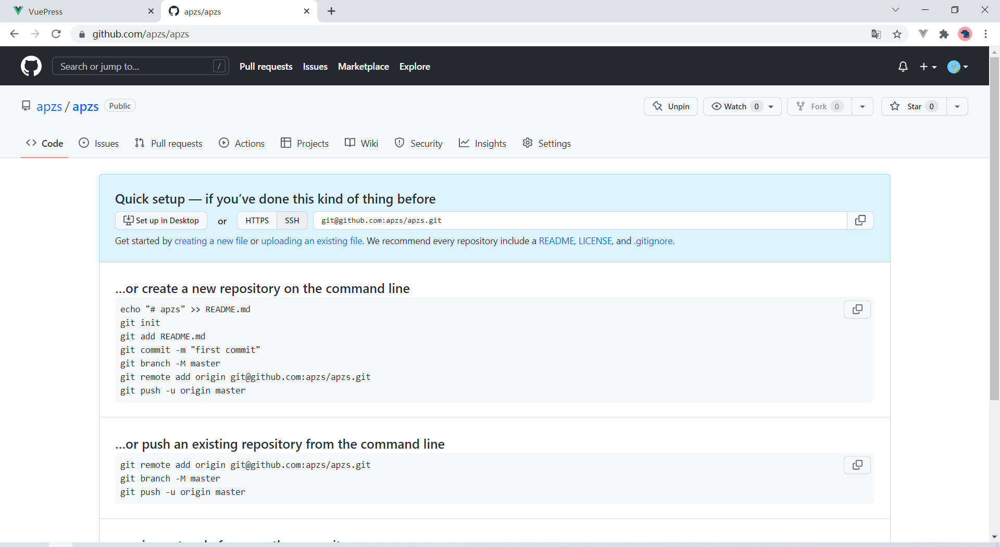
如果是gitee的话，注意区分姓名和个人空间地址
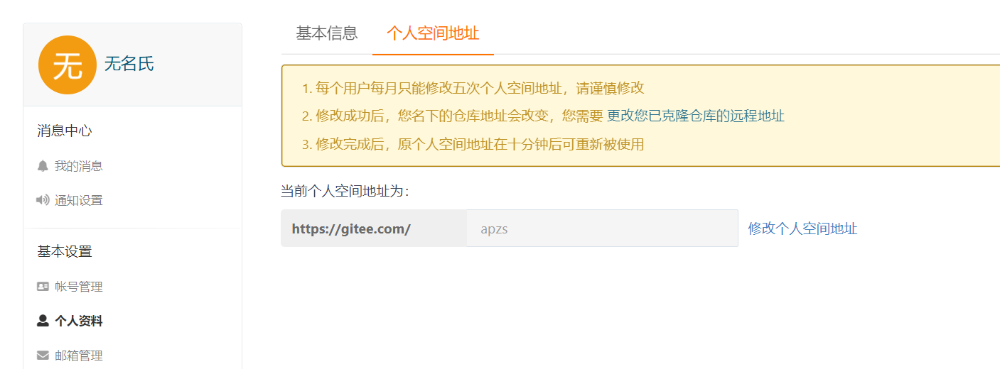
我要设置的项目名为https://gitee.com/后面跟的apzs
仓库名应设置为apzs.gitee.io，需要在个人空间地址后面添加.gitee.io,最开始搞错了
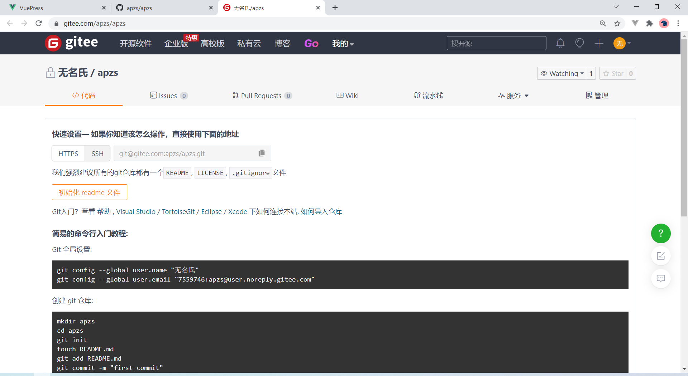
# 1.2、推送到远程仓库
新建一个和仓库同名的文件夹，然后执行如下命名以初始化git
git init
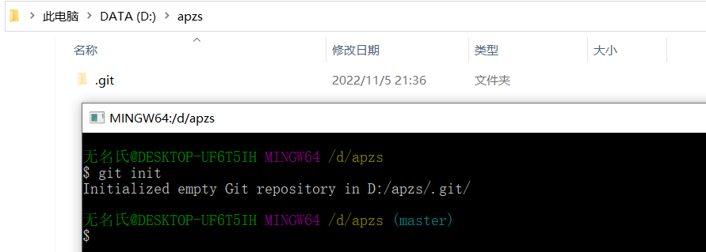
新建README.md文档，在里面输入一些个人描述
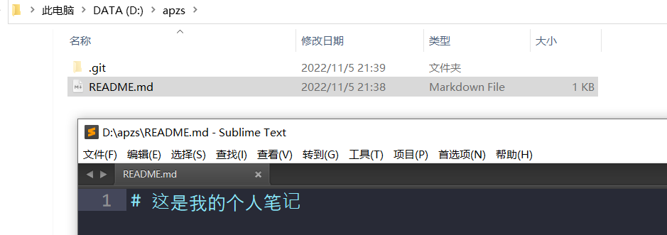
然后依次执行如下命令，将文件推送到远程仓库
git add . #跟踪所有文件，并把新文件放入暂存区(将该文件夹下的所有文件都由git管理)
git commit -m "first commit" #提交所有暂存区文件到本地版本库
git branch -M master #创建master分支
git remote add origin git@github.com:apzs/apzs.git #添加远程仓库，需要指定自己的仓库地址
git push -u origin master #推送到远程仓库
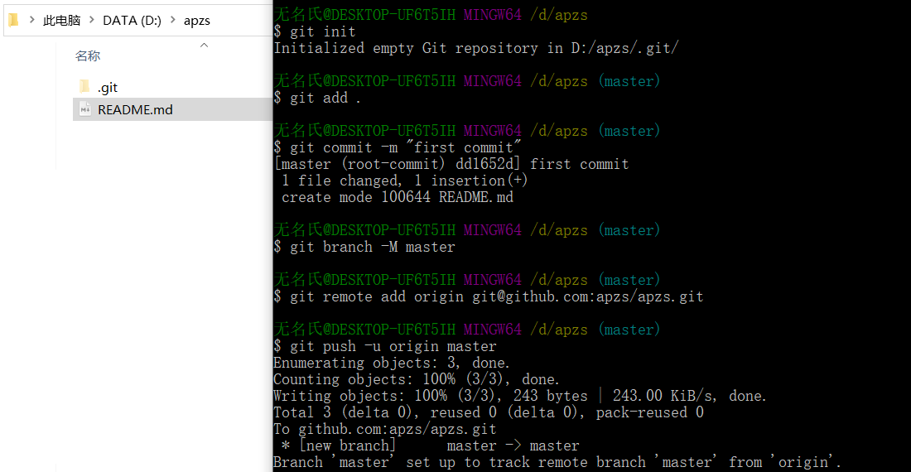
此时就推送到远程仓库了
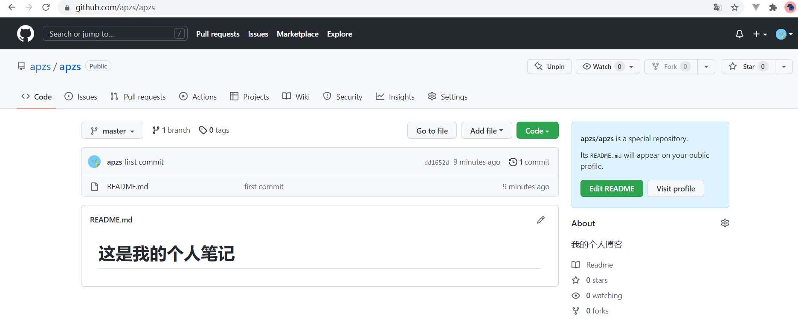
可以使用如下方式同时推送到github和gitee
git remote add gitee git@gitee.com:apzs/apzs.git #添加gitee远程仓库（注意更换为自己的远程仓库地址）
git push -u gitee "master" #推送到gitee的master分支上
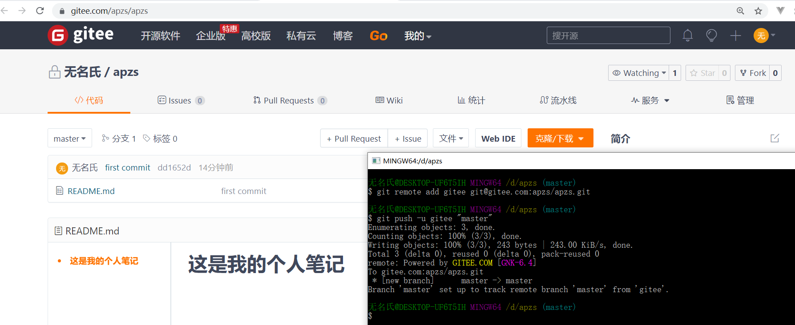
# 快速上手
全局安装vuepress(不推荐)
根据官方文档 (opens new window)提示，首先全局安装vuepress（官方已经不推荐全局安装vuepress，因此该步骤省略）
yarn global add vuepress # 或者：npm install -g vuepress
参照官方文档 (opens new window)完成创建
创建并进入一个新目录 (我们已经创建了，此步骤可跳过)
mkdir vuepress-starter && cd vuepress-starter使用你喜欢的包管理器进行初始化
yarn init # npm init将 VuePress 安装为本地依赖
我们已经不再推荐全局安装 VuePress
yarn add -D vuepress # npm install -D vuepress创建你的第一篇文档 (此方式
windows用不了，可以在apzs项目里新建docs文件夹，在docs里新建README.md文件，在该文件里写内容)mkdir docs && echo '# Hello VuePress' > docs/README.md在
package.json中添加一些 scripts(opens new window) (opens new window)这一步骤是可选的，但我们推荐你完成它。在下文中，我们会默认这些 scripts 已经被添加。
{ "scripts": { "docs:dev": "vuepress dev docs", //使用 "docs:dev": "vuepress dev docs --temp .temp", 可实现热更新 "docs:build": "vuepress build docs" } }在本地启动服务器
yarn docs:dev # npm run docs:devVuePress 会在 http://localhost:8080 (opens new window) (opens new window)启动一个热重载的开发服务器。
步骤2~3图片：
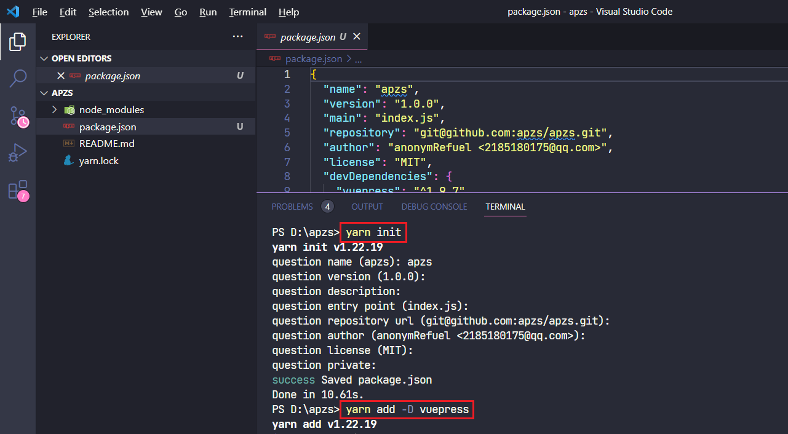
步骤4图片：(在apzs项目里新建docs文件夹，在docs里新建README.md文件，在该文件里写内容)
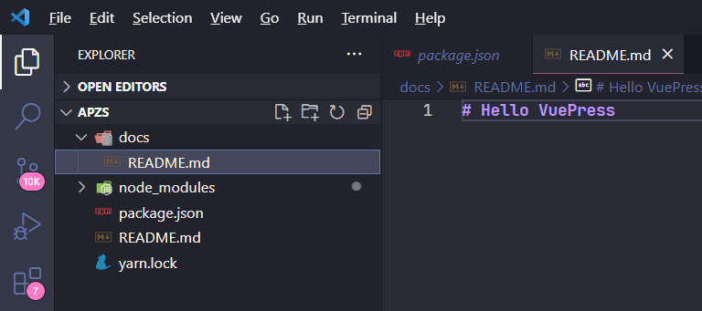
步骤5图片：(如果存在scripts标签直接替换即可)
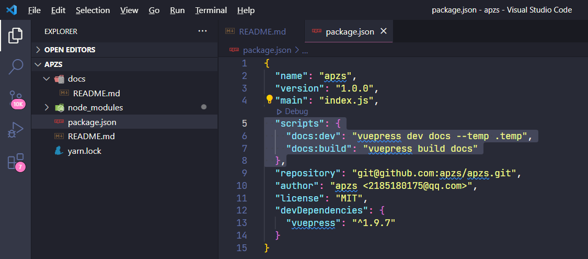
步骤6图片
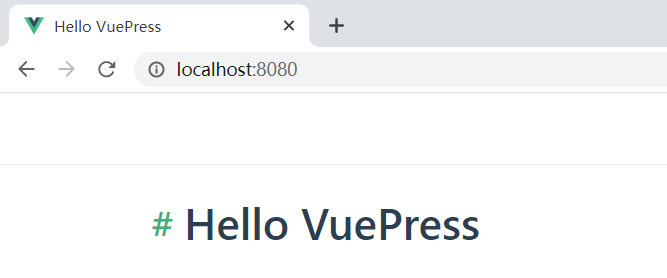
# 首页 (opens new window)
VuePress支持YAML front matter (opens new window)，因此可以在docs/README.md里添加如下代码来进行首页配置
---
home: true
# heroImage: /hero.png 由于我们没有这个图片所以注释掉
heroText: Hero 标题
tagline: Hero 副标题
actionText: 快速上手 →
actionLink: /zh/guide/
features:
- title: 简洁至上
details: 以 Markdown 为中心的项目结构，以最少的配置帮助你专注于写作。
- title: Vue驱动
details: 享受 Vue + webpack 的开发体验，在 Markdown 中使用 Vue 组件，同时可以使用 Vue 来开发自定义主题。
- title: 高性能
details: VuePress 为每个页面预渲染生成静态的 HTML，同时在页面被加载的时候，将作为 SPA 运行。
footer: MIT Licensed | Copyright © 2018-present Evan You
---
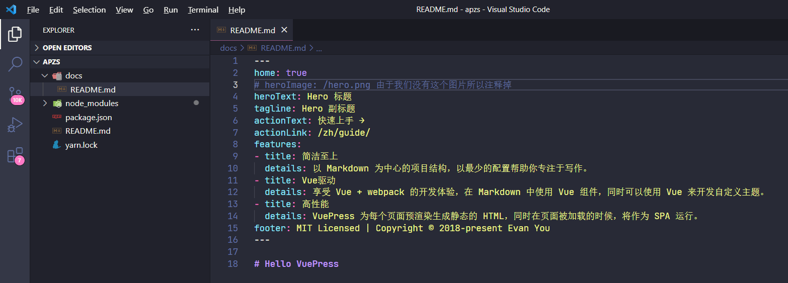
重新执行yarn docs:dev即可看到主页
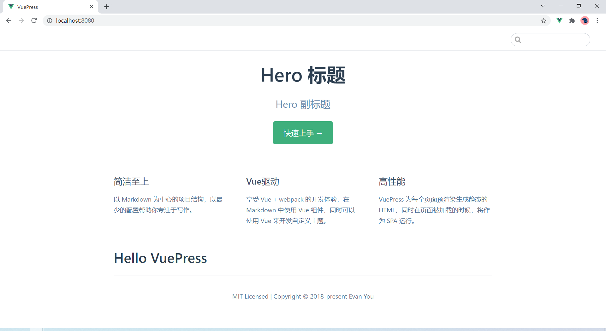
# 目录结构 (opens new window)
VuePress 遵循 “约定优于配置” 的原则，推荐的目录结构如下：
.
├── docs
│ ├── .vuepress (可选的)
│ │ ├── components (可选的)
│ │ ├── theme (可选的)
│ │ │ └── Layout.vue
│ │ ├── public (可选的)
│ │ ├── styles (可选的)
│ │ │ ├── index.styl
│ │ │ └── palette.styl
│ │ ├── templates (可选的, 谨慎配置)
│ │ │ ├── dev.html
│ │ │ └── ssr.html
│ │ ├── config.js (可选的)
│ │ └── enhanceApp.js (可选的)
│ │
│ ├── README.md
│ ├── guide
│ │ └── README.md
│ └── config.md
│
└── package.json
注意
请留意目录名的大写。
docs/.vuepress: 用于存放全局的配置、组件、静态资源等。docs/.vuepress/components: 该目录中的 Vue 组件将会被自动注册为全局组件。docs/.vuepress/theme: 用于存放本地主题。docs/.vuepress/styles: 用于存放样式相关的文件。docs/.vuepress/styles/index.styl: 将会被自动应用的全局样式文件，会生成在最终的 CSS 文件结尾，具有比默认样式更高的优先级。docs/.vuepress/styles/palette.styl: 用于重写默认颜色常量，或者设置新的 stylus 颜色常量。docs/.vuepress/public: 静态资源目录。docs/.vuepress/templates: 存储 HTML 模板文件。docs/.vuepress/templates/dev.html: 用于开发环境的 HTML 模板文件。docs/.vuepress/templates/ssr.html: 构建时基于 Vue SSR 的 HTML 模板文件。docs/.vuepress/config.js: 配置文件的入口文件，也可以是YML或toml。docs/.vuepress/enhanceApp.js: 客户端应用的增强。
注意
当你想要去自定义 templates/ssr.html 或 templates/dev.html 时，最好基于 默认的模板文件 (opens new window) (opens new window)来修改，否则可能会导致构建出错。
# 默认的页面路由 (opens new window)
此处我们把 docs 目录作为 targetDir （参考 命令行接口 (opens new window)），下面所有的“文件的相对路径”都是相对于 docs 目录的。在项目根目录下的 package.json 中添加 scripts ：
{
"scripts": {
"dev": "vuepress dev docs",
"build": "vuepress build docs"
}
}
对于上述的目录结构，默认页面路由地址如下：
| 文件的相对路径 | 页面路由地址 |
|---|---|
/README.md | / |
/guide/README.md | /guide/ |
/config.md | /config.html |
在docs文件夹下新建about文件夹，在about文件夹下新建README.md文件
在docs文件夹下新建about2.md文件
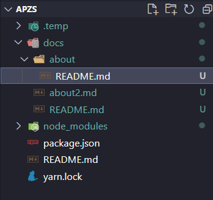
docs下面有个README.md文件，因此可以访问 http://localhost:8080/ （根路径为docs，并不是以项目路径为根路径）
如果想查看docs/about/README.md文件，则可以访问 http://localhost:8080/about/
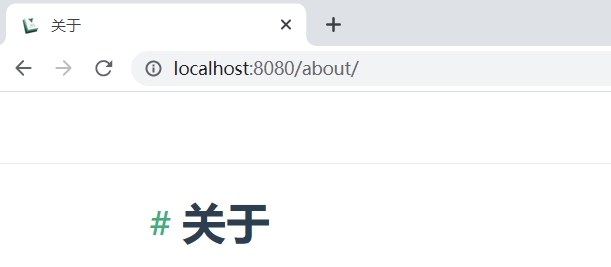
如果想查看docs/about2.md文件，则可以访问 http://localhost:8080/about2.html
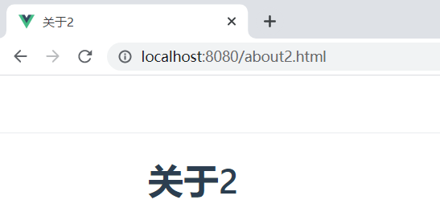
# 导航栏 (opens new window)
导航栏可能包含你的页面标题、搜索框 (opens new window)、 导航栏链接 (opens new window)、多语言切换 (opens new window)、仓库链接 (opens new window)，它们均取决于你的配置。
# 导航栏 Logo (opens new window)
你可以通过 themeConfig.logo 增加导航栏 Logo ，Logo 可以被放置在公共文件目录 (opens new window)：( 可以存放在docs/.vuepress/public: 静态资源目录 里，具体目录可以参见目录结构)
// .vuepress/config.js
module.exports = {
themeConfig: {
logo: '/assets/img/logo.png',
}
}
创建的文件如下：
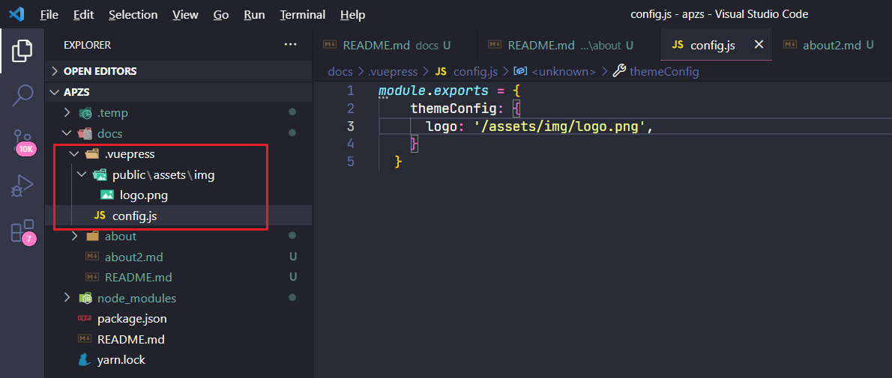
运行后，logo已经显示出来了
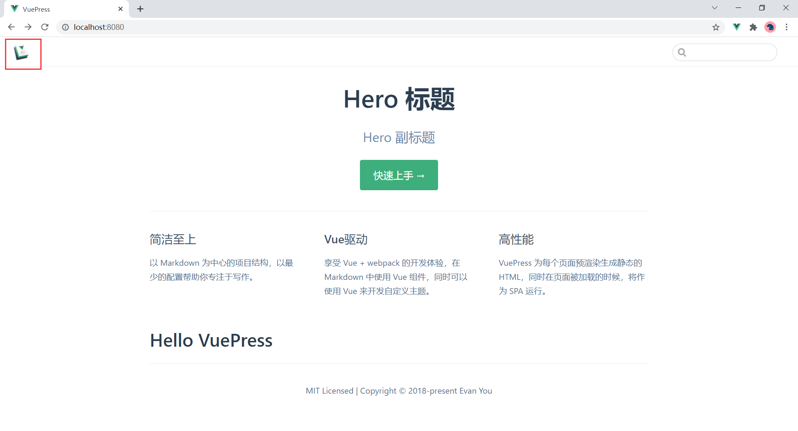
# 导航栏链接 (opens new window)
你可以通过 themeConfig.nav 增加一些导航栏链接:
// .vuepress/config.js
module.exports = {
themeConfig: {
nav: [
{ text: 'Home', link: '/' },
{ text: 'Guide', link: '/guide/' },
{ text: 'External', link: 'https://google.com' },
]
}
}
外部链接 <a> 标签的特性将默认包含target="_blank" rel="noopener noreferrer"，你可以提供 target 与 rel，它们将被作为特性被增加到 <a> 标签上：
// .vuepress/config.js
module.exports = {
themeConfig: {
nav: [
{ text: 'External', link: 'https://google.com', target:'_self', rel:'' },
{ text: 'Guide', link: '/guide/', target:'_blank' }
]
}
}
当你提供了一个 items 数组而不是一个单一的 link 时，它将显示为一个 下拉列表 ：
// .vuepress/config.js
module.exports = {
themeConfig: {
nav: [
{
text: 'Languages',
ariaLabel: 'Language Menu',
items: [
{ text: 'Chinese', link: '/language/chinese/' },
{ text: 'Japanese', link: '/language/japanese/' }
]
}
]
}
}
此外，你还可以通过嵌套的 items 来在 下拉列表 中设置分组：（就是将link: '/language/chinese/'换成了items: [/* */]）
// .vuepress/config.js
module.exports = {
themeConfig: {
nav: [
{
text: 'Languages',
items: [
{ text: 'Group1', items: [/* */] },
{ text: 'Group2', items: [/* */] }
]
}
]
}
}
完整配置的显示效果：
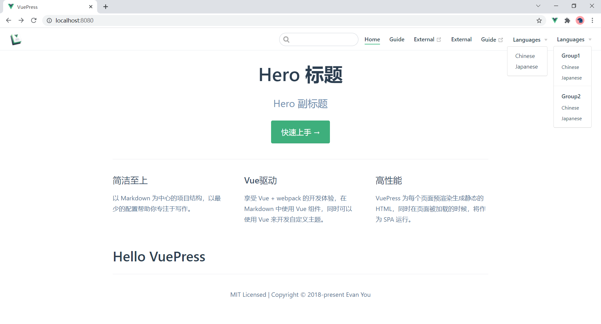
# 禁用导航栏 (opens new window)
你可以使用 themeConfig.navbar 来禁用所有页面的导航栏：
// .vuepress/config.js
module.exports = {
themeConfig: {
navbar: false
}
}
你也可以通过 YAML front matter 来禁用某个指定页面的导航栏：
---
navbar: false
---
在docs/.vuepress/config.js文件添加如下配置：
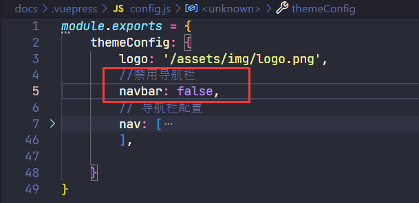
此时全局都禁用了导航栏
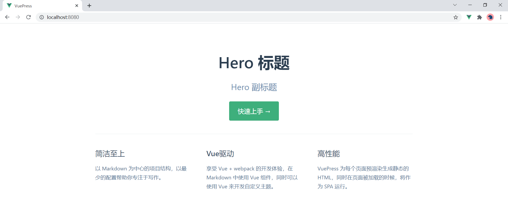
如果只在docs\about2.md文件里设置禁用导航栏，则只在访问当前文件时禁用导航栏
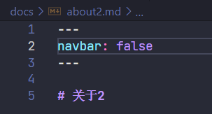
此时访问 http://localhost:8080/about2.html 则看不到导航栏
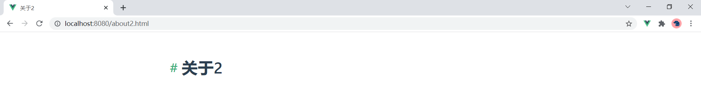
访问其他页面 (opens new window)则可以看到导航栏
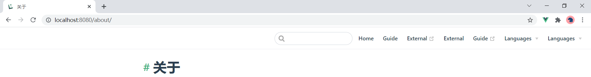
# 侧边栏--数组写法 (opens new window)
侧边栏的两种形式：数组（适合介绍页）、对象（适合博客）
想要使 侧边栏（Sidebar）生效，需要配置 themeConfig.sidebar，基本的配置，需要一个包含了多个链接的数组：
// .vuepress/config.js
module.exports = {
themeConfig: {
sidebar: [
'/',
'/page-a',
['/page-b', 'Explicit link text']
]
}
}
你可以省略 .md 拓展名，同时以 / 结尾的路径将会被视为 */README.md，这个链接的文字将会被自动获取到（无论你是声明为页面的第一个 header，还是明确地在 YAML front matter 中指定页面的标题）。如果你想要显示地指定链接的文字，使用一个格式为 [link, text] 的数组。
在docs\.vuepress\config.js里添加如下配置
//侧边栏
sidebar: [
'/', // docs/README.md 以"/"结尾会视为"/README.md"
'/about/', // docs/about/README.md 以"/"结尾会视为"/README.md"
['/about2', '指定文字'] // docs/about2.md 不是以"/"结尾并且没有后缀，会自动加上".md"后缀
]
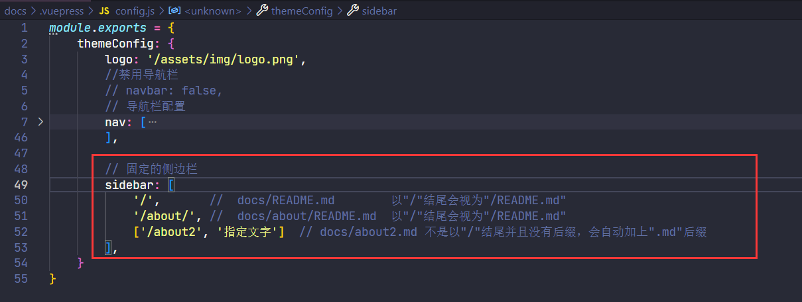
此时已经生效了，这种方式设置的侧边栏所有页面的侧边栏都是一样的，因此此方式适合写介绍页，不适合写博客
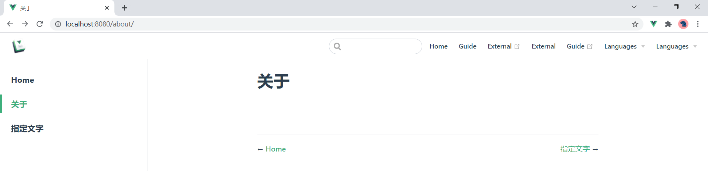
# 嵌套的标题链接 (opens new window)
默认情况下，侧边栏会自动地显示由当前页面的标题（headers）组成的链接，并按照页面本身的结构进行嵌套，你可以通过 themeConfig.sidebarDepth 来修改它的行为。默认的深度是 1，它将提取到 h2 的标题，设置成 0 将会禁用标题（headers）链接，同时，最大的深度为 2，它将同时提取 h2 和 h3 标题。
也可以使用 YAML front matter 来为某个页面重写此值：
---
sidebarDepth: 2
---
# 显示所有页面的标题链接 (opens new window)
默认情况下，侧边栏只会显示由当前活动页面的标题（headers）组成的链接，你可以将 themeConfig.displayAllHeaders 设置为 true 来显示所有页面的标题链接：
// .vuepress/config.js
module.exports = {
themeConfig: {
displayAllHeaders: true // 默认值：false
}
}
# 活动的标题链接 (opens new window)
默认情况下，当用户通过滚动查看页面的不同部分时，嵌套的标题链接和 URL 中的 Hash 值会实时更新，这个行为可以通过以下的配置来禁用：
// .vuepress/config.js
module.exports = {
themeConfig: {
activeHeaderLinks: false, // 默认值：true
}
}
提示
值得一提的是，当你禁用此选项时，此功能的相应脚本将不会被加载，这是我们性能优化的一个小点。
# 侧边栏分组 (opens new window)
你可以通过使用对象来将侧边栏划分成多个组：
// .vuepress/config.js
module.exports = {
themeConfig: {
sidebar: [
{
title: 'Group 1', // 必要的
path: '/foo/', // 可选的, 标题的跳转链接，应为绝对路径且必须存在
collapsable: false, // 可选的, 默认值是 true,
sidebarDepth: 1, // 可选的, 默认值是 1
children: [
'/'
]
},
{
title: 'Group 2',
children: [ /* ... */ ],
initialOpenGroupIndex: -1 // 可选的, 默认值是 0
}
]
}
}
侧边栏的每个子组默认是可折叠的，你可以设置 collapsable: false 来让一个组永远都是展开状态。
一个侧边栏的子组配置同时支持 sidebarDepth (opens new window) 字段用于重写默认显示的侧边栏深度(1)。
提示
嵌套的侧边栏分组也是支持的。
在添加如下配置，并在docs文件夹里新建note文件夹，并添加如下几个文件 (children使用绝对路径)
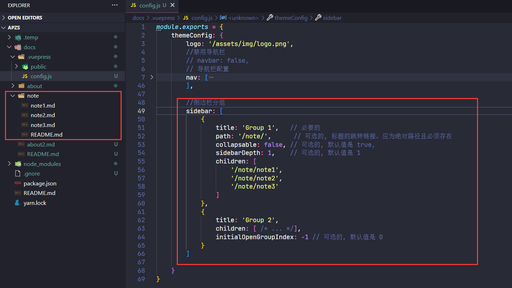
显示效果：
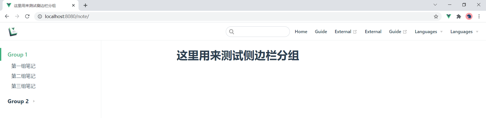
# 侧边栏--对象写法 (opens new window)
侧边栏的两种形式：数组（适合介绍页）、对象（适合博客）
# 多个侧边栏 (opens new window)
如果你想为不同的页面组来显示不同的侧边栏，首先，将你的页面文件组织成下述的目录结构：
.
├─ README.md
├─ contact.md
├─ about.md
├─ foo/
│ ├─ README.md
│ ├─ one.md
│ └─ two.md
└─ bar/
├─ README.md
├─ three.md
└─ four.md
接着，遵循以下的侧边栏配置：
// .vuepress/config.js
module.exports = {
themeConfig: {
sidebar: {
'/foo/': [
'', /* /foo/ */
'one', /* /foo/one.html */
'two' /* /foo/two.html */
],
'/bar/': [
'', /* /bar/ */
'three', /* /bar/three.html */
'four' /* /bar/four.html */
],
// fallback
'/': [
'', /* / */
'contact', /* /contact.html */
'about' /* /about.html */
]
}
}
}
注意
确保 fallback 侧边栏被最后定义。VuePress 会按顺序遍历侧边栏配置来寻找匹配的配置。
// 匹配路径长的写在上面，匹配路径短的写在下面
sidebar: {
'/foo/': [
'', /* /foo/ */
'one', /* /foo/one.html */
'two' /* /foo/two.html */
],
// fallback
'/': [
'', /* / 首页 */
'contact', /* /contact.html */
'about' /* /about.html */
]
}
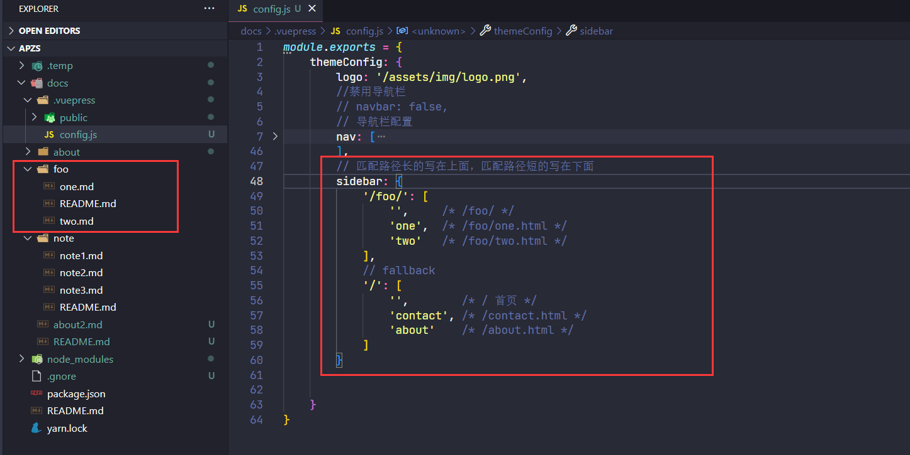
显示效果如下：
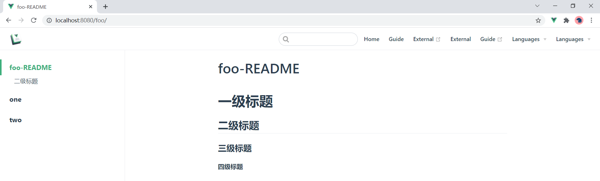
# 自动生成侧栏 (opens new window)
如果你希望自动生成一个仅仅包含了当前页面标题（headers）链接的侧边栏，你可以通过 YAML front matter 来实现：
---
sidebar: auto
---
你也可以通过配置来在所有页面中启用它：
// .vuepress/config.js
module.exports = {
themeConfig: {
sidebar: 'auto'
}
}
在 多语言 (opens new window) 模式下, 你也可以将其应用到某一特定的语言下：
// .vuepress/config.js
module.exports = {
themeConfig: {
'/zh/': {
sidebar: 'auto'
}
}
}
可以在docs\about\README.md文件里添加如下配置自动显示侧边栏（需要注释掉刚刚配置的全局的侧边栏）
---
sidebar: auto
---
# 1.一级标题
## 1.1 二级标题
### 1.1.1 三级标题
#### 1.1.1.1 四级标题
# 2.一级标题
## 2.1 二级标题
### 2.1.1 三级标题
## 2.2.二级标题
### 2.2.1 三级标题
#### 2.2.1.1 四级标题
#### 2.2.1.2 四级标题
#### 2.2.1.3 四级标题
### 2.2.2 三级标题
#### 2.2.2.1 四级标题
#### 2.2.2.2 四级标题
#### 2.2.2.3 四级标题
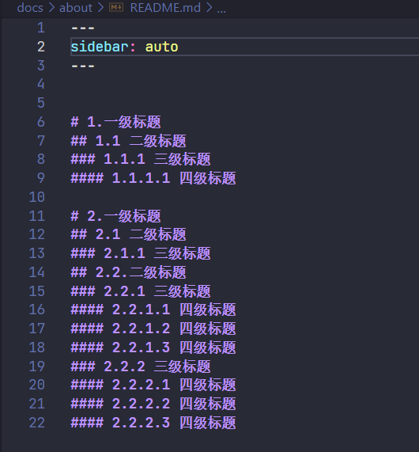
此时会显示该mackdown文件的第一个一级标题和其他所有的二级标题和三级标题 (这个一级标题必须放在文章的首个有效行，局部配置和空行不算有效行，前面不能使用<!-- # 关于 -->类似的注释，否则将无法显示首个一级标题)
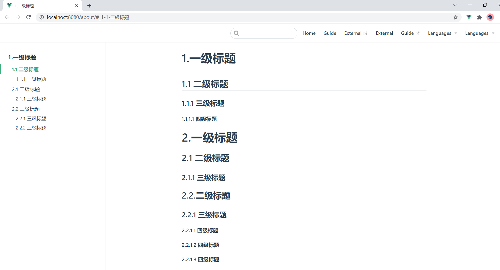
可以使用title指定一级标题名称
---
sidebar: auto
title: 标题
---
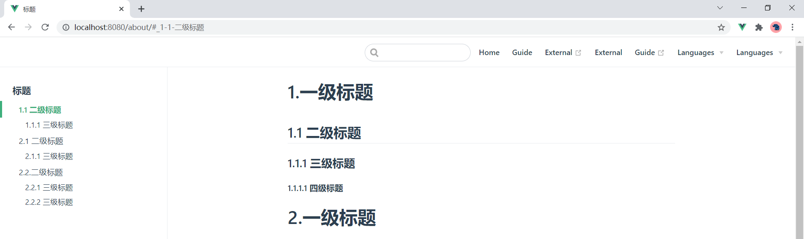
在docs\.vuepress\config.js文件里使用sidebar: 'auto'即可配置全局侧边栏
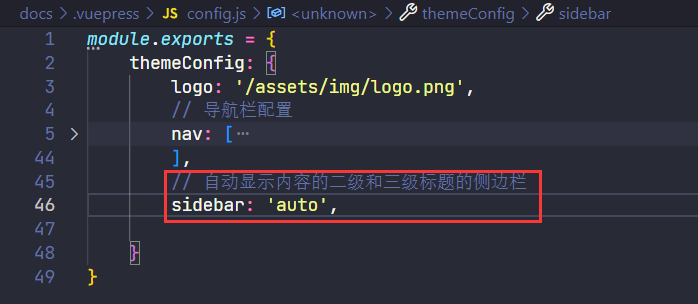
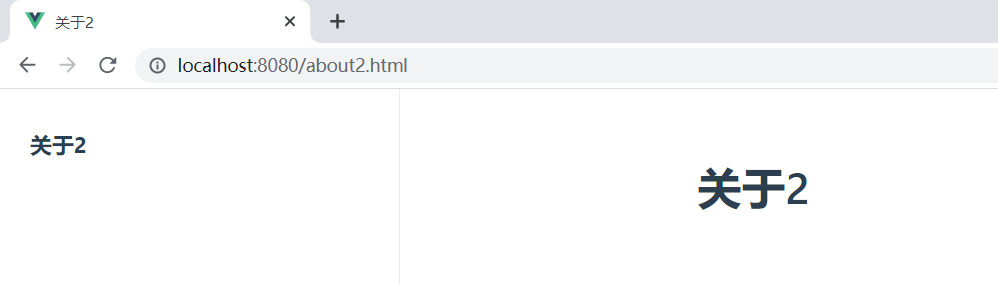
# 禁用侧边栏 (opens new window)
你可以通过 YAML front matter 来禁用指定页面的侧边栏：
---
sidebar: false
---
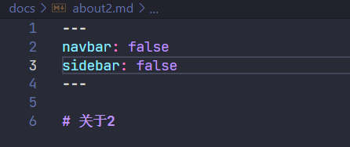
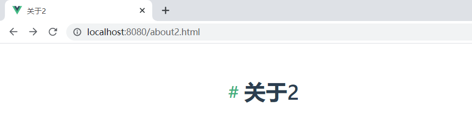
# SEO (opens new window)
# title (opens new window)
- 类型:
string - 默认值:
undefined
网站的标题，它将会被用作所有页面标题的前缀，同时，默认主题下，它将显示在导航栏（navbar）上。
# description (opens new window)
- 类型:
string - 默认值:
undefined
网站的描述，它将会以 <meta> 标签渲染到当前页面的 HTML 中。
# head (opens new window)
- 类型:
Array - 默认值:
[]
额外的需要被注入到当前页面的 HTML <head> 中的标签，每个标签都可以以 [tagName, { attrName: attrValue }, innerHTML?] 的格式指定，举个例子，增加一个自定义的 favicon：
module.exports = {
head: [
['link', { rel: 'icon', href: '/logo.png' }]
]
}
在docs\.vuepress\config.js里添加如下配置：
module.exports = {
title: "个人笔记",
description: "这是我的个人笔记",
head: [
['link', { rel: 'icon', href: '/assets/img/logo.png' }],
['meta', { name: 'author', content: 'apzs' }],
['meta', { name: 'keywords', content: '这里主要记载Vue、ES6、Promise、SpringBoot、SpringCloud等技术' }],
]
}
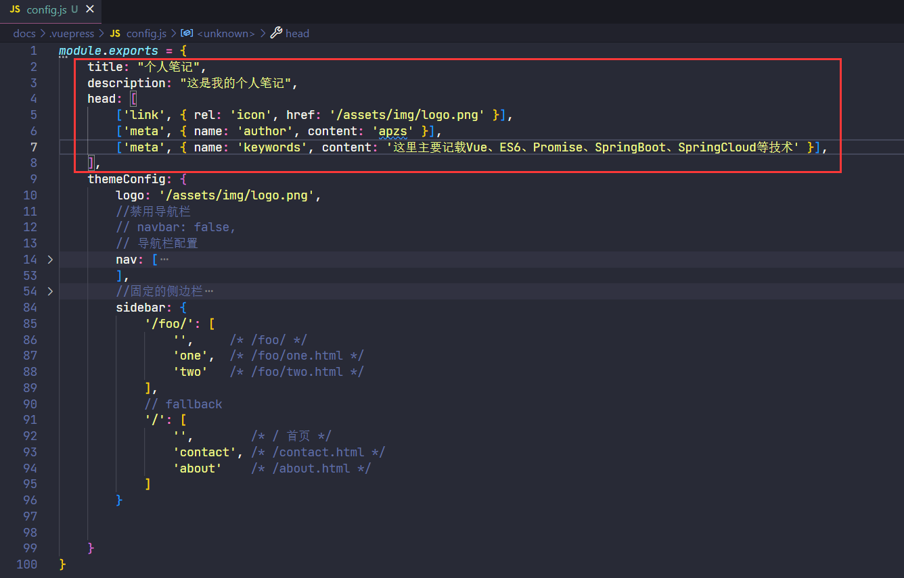
效果：
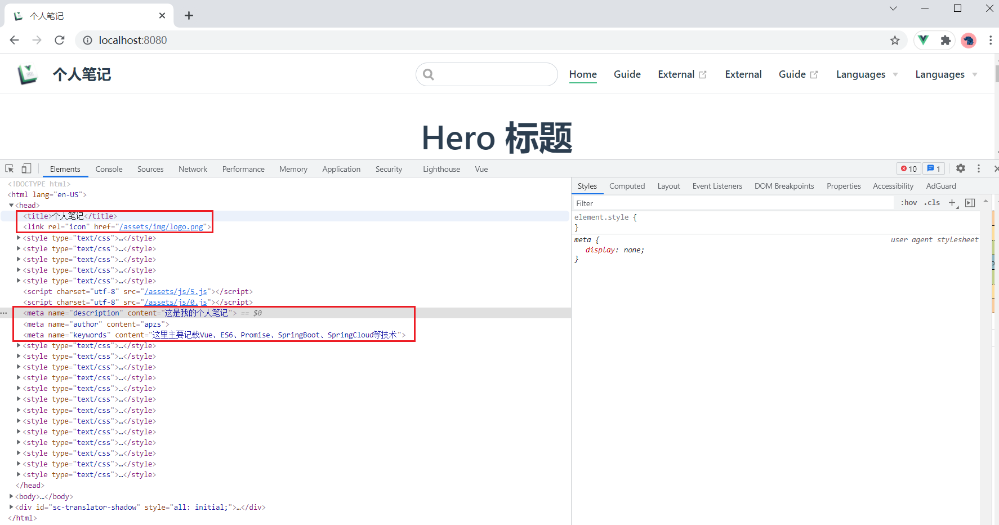
# 最后更新时间 (opens new window)
你可以通过 themeConfig.lastUpdated 选项来获取每个文件最后一次 git 提交的 UNIX 时间戳(ms)，同时它将以合适的日期格式显示在每一页的底部：
// .vuepress/config.js
module.exports = {
themeConfig: {
lastUpdated: 'Last Updated', // string | boolean
}
}
请注意，themeConfig.lastUpdated 默认是关闭的，如果给定一个字符串，它将会作为前缀显示（默认值是：Last Updated）。
使用须知
由于 lastUpdated 是基于 git 的, 所以你只能在一个基于 git 的项目中启用它。此外，由于使用的时间戳来自 git commit，因此它将仅在给定页的第一次提交之后显示，并且仅在该页面后续提交更改时更新。
拓展阅读:
# 添加最后更新时间
在docs\.vuepress\config.js文件里添加如下配置：
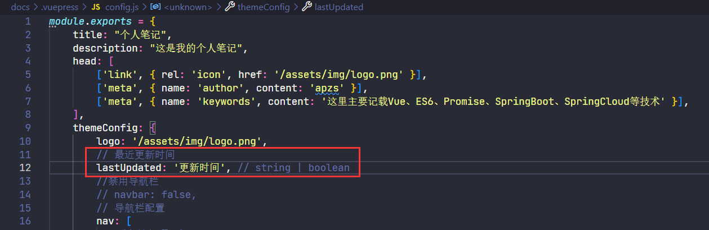
在根路径创建.gitignore文件，不将node_modules/和.temp文件夹的内容添加到版本管理
node_modules/
dist/
npm-debug.log*
yarn-debug.log*
yarn-error.log*
package-lock.json
# Editor directories and files
.idea
.vscode
.temp
*.suo
*.ntvs*
*.njsproj
*.sln
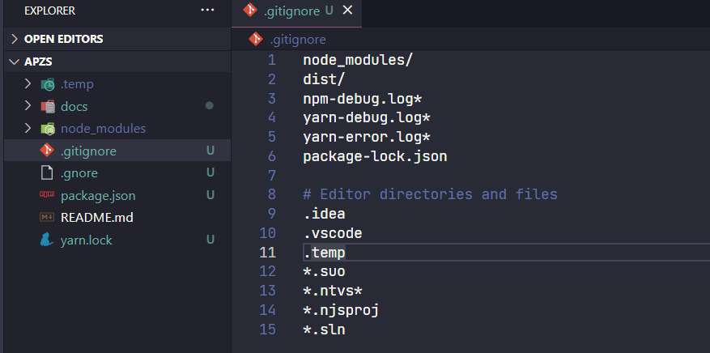
git add . #跟踪所有文件，并把新文件放入暂存区
git commit -m "测试更新时间" #提交所有暂存区文件到本地版本库
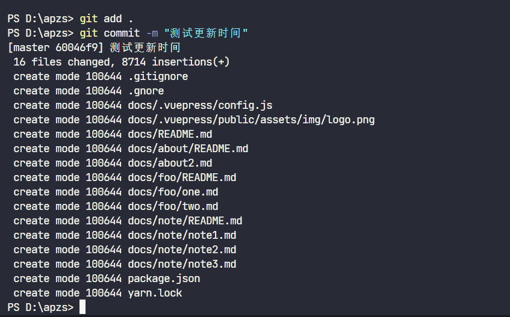
此时更新时间就显示出来了
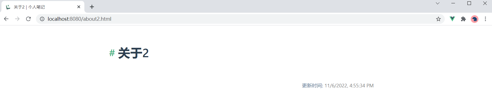
# 插件的书写形式 (opens new window)
# Babel 式 (opens new window)
插件可以通过在配置内的数组中封装名称和选项对象来指定选项：
module.exports = {
plugins: [
[
'vuepress-plugin-xxx',
{ /* options */ }
]
]
}
由于这种风格和 babeld Plugin/Preset Options (opens new window) (opens new window)一致，我们称之为"Babel 风格"。
# 对象式 (opens new window)
VuePress 也提供了一种更简单的方式来使用来自依赖的插件：
module.exports = {
plugins: {
'xxx': { /* options */ }
}
}
# 调整更新时间格式 (opens new window)
# 安装
以管理员身份执行如下命令：
yarn add moment
如果出现error An unexpected error occurred: "EPERM: operation not permitted, unlink 'D:\\apzs\\node_modules\\.bin\\vuepress'".错误，就是没有以管理员身份执行命令
# 使用 (opens new window)
module.exports = {
plugins: ['@vuepress/last-updated']
}
# transformer (opens new window)
- 类型:
(timestamp: number, lang: string) => string - 默认值:
undefined
默认情况下，本插件为每个页面生成一个 13 位的时间戳，你可以传入一个 transformer 将其转换为你想要的任何格式。
例子：
const moment = require('moment');
module.exports = {
plugins: [
[
'@vuepress/last-updated',
{
transformer: (timestamp, lang) => {
// 不要忘了安装 moment
const moment = require('moment')
moment.locale(lang)
return moment(timestamp).fromNow()
}
}
]
]
}
在docs\.vuepress\config.js里添加如下配置，注意：需要与themeConfig平级、需要先使用yarn add moment命令安装moment
Babel 式：
module.exports = {
plugins: [
[
'@vuepress/last-updated',
{
transformer: (timestamp, lang) => {
// 不要忘了安装 moment
const moment = require('moment')
// moment.locale(lang) 访问 http://localhost:8080/zh-cn/about2.html 更新时间才会以中文显示
moment.locale('zh-cn')
// 格式参考 http://momentjs.cn/docs/#/use-it/typescript/
return moment(timestamp).format("LLLL")
}
}
]
]
}
对象式：
module.exports = {
plugins: [
{
'@vuepress/last-updated': {
transformer: (timestamp, lang) => {
// 不要忘了安装 moment
const moment = require('moment')
// moment.locale(lang) 访问 http://localhost:8080/zh-cn/about2.html 更新时间才会以中文显示
moment.locale('zh-cn')
// 格式参考 http://momentjs.cn/docs/#/use-it/typescript/
return moment(timestamp).format("LLLL")
}
}
}
]
}
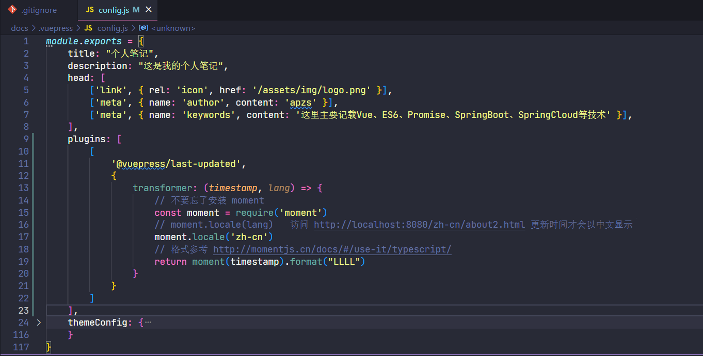
显示效果：
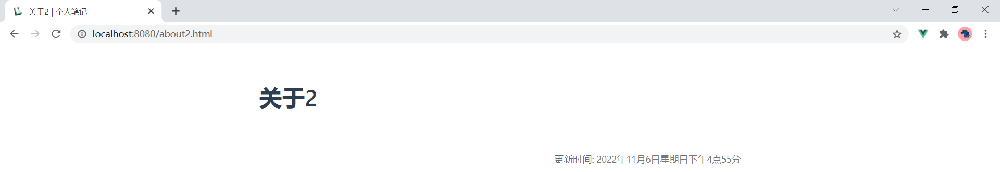
# GitHub Pages (opens new window)
在
docs/.vuepress/config.js中设置正确的base。如果你打算发布到
https://<USERNAME>.github.io/，则可以省略这一步，因为base默认即是"/"。如果你打算发布到
https://<USERNAME>.github.io/<REPO>/（也就是说你的仓库在https://github.com/<USERNAME>/<REPO>），则将base设置为"/<REPO>/"。在你的项目中，创建一个如下的
deploy.sh文件（请自行判断去掉高亮行的注释）:
#!/usr/bin/env sh
# 确保脚本抛出遇到的错误
set -e
# 生成静态文件
npm run docs:build
# 进入生成的文件夹
cd docs/.vuepress/dist
# 如果是发布到自定义域名
# echo 'www.example.com' > CNAME
git init
git add -A
git commit -m 'deploy'
# 如果发布到 https://<USERNAME>.github.io
# git push -f git@github.com:<USERNAME>/<USERNAME>.github.io.git master
# 如果发布到 https://<USERNAME>.github.io/<REPO>
# git push -f git@github.com:<USERNAME>/<REPO>.git master:gh-pages
cd -
提示：你可以在你的持续集成的设置中，设置在每次 push 代码时自动运行上述脚本。
如果你的用户名和仓库名不一致，需要指定base为你的仓库名
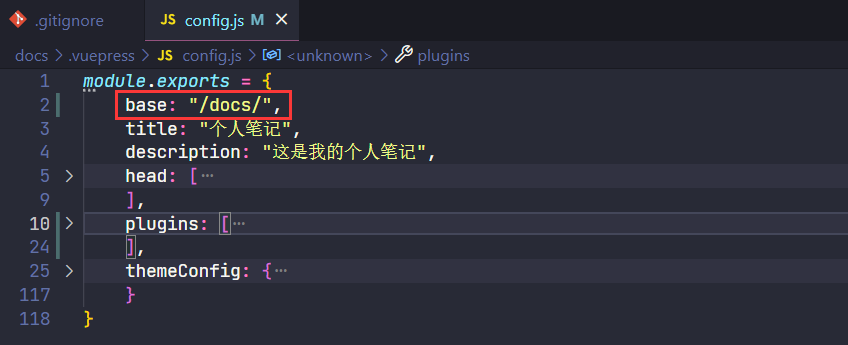
然后在项目根目录新建deploy.sh文件，并指定自己github的用户名和仓库信息
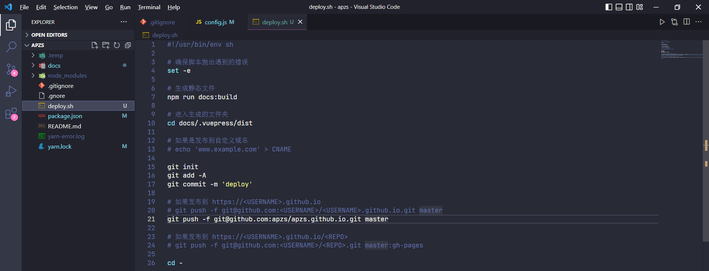
可以在package.json文件里添加快捷命令，由于该命令是linux上的命令，windows系统自带的终端无法执行，因此可以使用git自带的Git Bash Here来执行命令
"deploy": "bash deploy.sh"
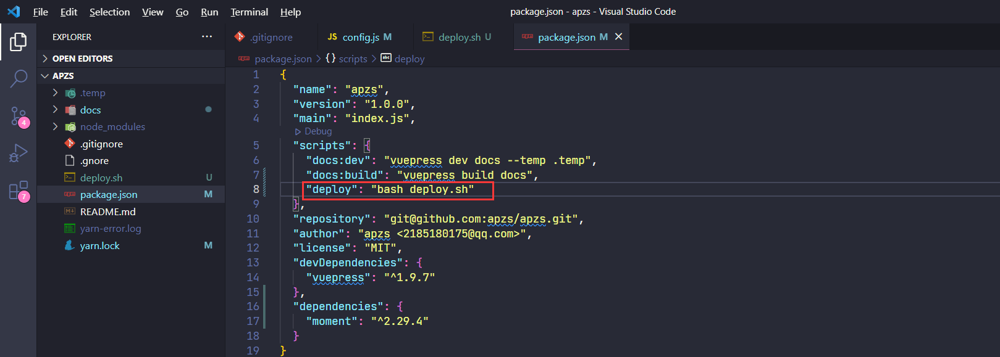
然后使用执行yarn deploy部署到github上
yarn deploy
如果不想使用Git Bash Here，也可以指定使用npm命令的终端为git的终端
npm config set script-shell "A:\\git\\Git\\bin\\bash.exe"
此时报了个错，提示/contact和/about找不到，直接删掉docs\.vuepress\config.js里的配置即可
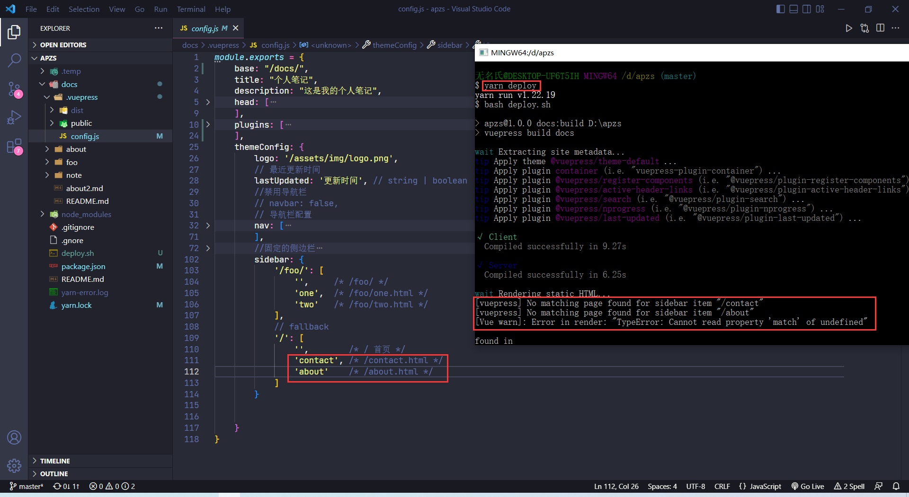
请确保您具有正确的访问权限并且仓库库存在
ERROR: Repository not found.
fatal: Could not read from remote repository.
Please make sure you have the correct access rights
and the repository exists.
error Command failed with exit code 128.
info Visit https://yarnpkg.com/en/docs/cli/run for documentation about this command.
添加权限：
删除docs\.vuepress\config.js文件里的base配置（演示完后忘记删了）
试了很久，最后找到原因了，项目名要设置为apzs.github.io才行
再次执行yarn deploy
至此，项目部署到github上成功
可以点击自己项目的Code -> About右侧的设置，输入自己的网站连接，以展示自己的网站。
# PWA (opens new window)
# 安装
yarn add -D @vuepress/plugin-pwa
# OR npm install -D @vuepress/plugin-pwa
# 使用 (opens new window)
module.exports = {
plugins: {
'@vuepress/pwa': {
serviceWorker: true,
updatePopup: {
message: "New content is available.",
buttonText: "Refresh"
}
}
}
}
提示
为了让你的网站完全地兼容 PWA，你需要:
- 在
.vuepress/public提供 Manifest 和 icons - 在
.vuepress/config.js添加正确的 head links (opens new window)(参见下面例子).
更多细节，请参见 MDN docs about the Web App Manifest (opens new window) (opens new window).
这是一个在VuePress中完全地兼容 PWA 的例子：
module.exports = {
head: [
['link', { rel: 'icon', href: '/logo.png' }],
['link', { rel: 'manifest', href: '/manifest.json' }],
['meta', { name: 'theme-color', content: '#3eaf7c' }],
['meta', { name: 'apple-mobile-web-app-capable', content: 'yes' }],
['meta', { name: 'apple-mobile-web-app-status-bar-style', content: 'black' }],
['link', { rel: 'apple-touch-icon', href: '/icons/apple-touch-icon-152x152.png' }],
['link', { rel: 'mask-icon', href: '/icons/safari-pinned-tab.svg', color: '#3eaf7c' }],
['meta', { name: 'msapplication-TileImage', content: '/icons/msapplication-icon-144x144.png' }],
['meta', { name: 'msapplication-TileColor', content: '#000000' }]
],
plugins: ['@vuepress/pwa', {
serviceWorker: true,
updatePopup: true
}],
}
用对象写法使用该插件
可以搜索 manifest icons generator，找到可以使用的在线生成网站，https://app-manifest.firebaseapp.com/ 是一个很好的在线生成的网站，可惜国内用不了
可以使用如下命令，克隆vuepress项目
git clone git@github.com:vuejs/vuepress.git
复制vuepress\packages\docs\docs\.vuepress\public文件夹里的manifest.json文件和icons文件夹
粘贴到apzs\docs\.vuepress\public文件夹下下
可以修改一下docs\.vuepress\public\manifest.json里的name和short_name
根据官方提示添加如下配置，兼容 PWA
如果使用yarn docs:dev启动后，没有应用上@vuepress/pwa，则需要使用yarn add -D vuepress命令，将 VuePress 安装为本地依赖（如果使用全局依赖@vuepress/pwa将不会生效）
应用上@vuepress/pwa后，使用yarn deploy命令部署到github，部署到github会存在延迟，可以修改主页内容以判断是否成功应用上配置，然后在Application -> Service Workers里查看是否存在pwa （使用yarn docs:dev本地部署时，pwa不会生效）
# vssue评论 (opens new window)
# 创建 GitHub OAuth App
前往 Settings -> Developer Settings -> OAuth Apps (opens new window)
可以使用API V3和API V4两种方式，其优缺点如下所示：
Github REST API V3 (opens new window)
- Vssue API 包： @vssue/api-github-v3 (opens new window)
- 特点 / 缺点：
- 需要设置 clientSecret (opens new window)
- 评论无法排序
- 评论可以编辑
- 评论可以删除
- 可以不登录浏览评论，但 API 有调用频率限制
- 开发者参考： 官方文档 (opens new window)
Github GraphQL API V4 (opens new window)
- Vssue API 包： @vssue/api-github-v4 (opens new window)
- 特点 / 缺点：
- 需要设置 clientSecret (opens new window)
- 评论可以排序
- 评论可以编辑
- 评论可以删除
- 要求登陆后才能浏览评论
- 开发者参考： 官方文档 (opens new window)
# 安装 (opens new window)
使用如下命令安装vssue，我们使用API V4来创建评论
yarn add @vssue/vuepress-plugin-vssue # npm install @vssue/vuepress-plugin-vssue
yarn add @vssue/api-github-v4 # npm install @vssue/api-github-v4
# 配置插件 (opens new window)
通过 VuePress 官方文档 (opens new window) 查看使用插件的详细方法
// .vuepress/config.js
module.exports = {
plugins: {
'@vssue/vuepress-plugin-vssue': {
// 设置 `platform` 而不是 `api`
platform: 'github',
// 其他的 Vssue 配置
owner: 'OWNER_OF_REPO',
repo: 'NAME_OF_REPO',
clientId: 'YOUR_CLIENT_ID',
clientSecret: 'YOUR_CLIENT_SECRET',
},
},
};
提示
唯一的区别在于，你需要设置
platform而不是对应的api包。
@vssue/vuepress-plugin-vssue会自动根据你设置的platform为你解析对应的 api 包：
- platform
github- api 包@vssue/api-github-v3- platform
github-v4- api 包@vssue/api-github-v4- platform
gitlab- api 包@vssue/api-gitlab-v4- platform
bitbucket- api 包@vssue/api-bitbucket-v2- platform
gitee- api 包@vssue/api-gitee-v5- platform
gitea- api 包@vssue/api-gitea-v1
配置自己的信息，platform即为你使用的api包，owner为你的用户名，repo为你的仓库名，clientId和clientSecret为你刚刚创建的GitHub OAuth App信息
在 Settings -> Developer Settings -> OAuth Apps (opens new window) 里选择自己刚刚创建的app名，即可查看clientId和clientSecret
# 使用插件 (opens new window)
直接在想添加评论的mackdown后面添加<Vssue/>即可
执行yarn docs:dev，在该mackdown对应的页面下成功添加评论
使用yarn docs:dev命令部署后，访问 https://apzs.github.io/about2.html 页面，登录github后，出现Failed to load comments，并不能添加评论，打开控制台发现报了如下错误，一般这个错误就是跨域问题
搜索一圈无果后，打开控制台可以发现 https://cors-anywhere.azm.workers.dev/https://github.com/login/oauth/access_token
访问失败了，搜索这个接口发现该接口被墙了
可以使用特殊的方式添加反向代理来解决跨域问题：https://blog.csdn.net/u013072756/article/details/126416759
不过几乎大部分白嫖的方式都不行了，需要自己有一台vps服务器或使用科学上网的方式访问
该问题解决后，点击Click to create issue创建一个issue即可添加评论
此时在自己的仓库的issue里也能看到自己的issue
# 自动创建issue (opens new window)
添加autoCreateIssue: true配置后，不用点击Click to create issue，登陆后可以直接评论
# 全局添加评论
全局都添加评论功能需要使用 主题的继承 | VuePress (vuejs.org) (opens new window)
根据参考的目录结构 | VuePress (vuejs.org) (opens new window)来添加配置
想要书写一个主题，首先在你文档根目录创建一个
.vuepress/theme目录，接着创建一个Layout.vue文件：. └─ .vuepress └─ theme └─ Layout.vue到这里，就像开发一个普通的 Vue 应用一样。如何组织你的主题，这完全取决于你。
随着需求的变化，只有一个布局组件
Layout.vue可能还不够，你可能想要定义更多的布局组件用于不同的页面，你可能还想要自定义一个调色板 (opens new window)，甚至应用一些插件。那么是时候重新组织你的主题了！一个约定的主题的目录结构如下：
theme ├── global-components │ └── xxx.vue ├── components │ └── xxx.vue ├── layouts │ ├── Layout.vue (必要的) │ └── 404.vue ├── styles │ ├── index.styl │ └── palette.styl ├── templates │ ├── dev.html │ └── ssr.html ├── index.js ├── enhanceApp.js └── package.json
theme/global-components: 该目录下的组件都会被自动注册为全局组件。想了解更多，请参考 @vuepress/plugin-register-components (opens new window) (opens new window)。theme/components: Vue 组件。theme/layouts: 布局组件，其中Layout.vue是必需的。theme/styles: 全局的样式和调色板。theme/templates: 修改默认的模板文件。theme/index.js: 主题文件的入口文件。theme/enhanceApp.js: 主题水平的客户端增强文件。
复制克隆的vuepress项目 (opens new window)的vuepress\packages\@vuepress\theme-default\layouts\Layout.vue文件
在docs\.vuepress里新建theme文件夹，在theme文件夹里新建layouts文件夹，粘贴Layout.vue文件到docs\.vuepress\theme\layouts这里面
复制vuepress\packages\@vuepress\theme-default\util文件夹
粘贴到docs\.vuepress\theme下（注意是docs\.vuepress\theme下，而不是docs\.vuepress\theme\layouts下）
在docs\.vuepress\theme目录下新建index.js文件（注意是docs\.vuepress\theme下，而不是docs\.vuepress\theme\layouts下）
创建一个继承自 VuePress 默认主题的派生主题 (opens new window)
假设你想创建一个继承自 VuePress 默认主题的派生主题，你只需要在你的主题配置中配置 extend (opens new window) 选项：
// .vuepress/theme/index.js
module.exports = {
extend: '@vuepress/theme-default'
}
在docs\.vuepress\theme\layouts\Layout.vue里添加Vssue
<Vssue :options="{ locale: 'zh' }" />
此时就显示出来了，只不过样式有点问题
只需要给vssue所在的类添加theme-default-content content__default就行了
将Vssue组件修改这样就行了
<Vssue class="theme-default-content content__default" :options="{ locale: 'zh' }" />
最终效果：
发布到线上时，可以修改github上配置OAuth Apps的Homepage URL和Authorization callback URL
# 回到顶部 (opens new window)
# 安装
yarn add -D @vuepress/plugin-back-to-top
# OR npm install -D @vuepress/plugin-back-to-top
# 使用
module.exports = {
plugins: ['@vuepress/back-to-top']
}
划到任意文章页面的底部，就出现返回顶部的按钮了
# 谷歌数据分析
# 创建媒体资源(这里创建错了) (opens new window)
首先需要创建账户，然后点击设置里面的创建媒体资源，信息随便填
选择网站
选择自己的网站
此
以下是此帐号的 Google 代码。请将该代码复制并粘贴到您网站上每个网页的代码中，紧跟在 <head> 元素之后。每个网页只能添加一个 Google 代码。
<!-- Google tag (gtag.js) -->
<script async src="https://www.googletagmanager.com/gtag/js?id=G-914BC3YVEQ"></script>
<script>
window.dataLayer = window.dataLayer || [];
function gtag(){dataLayer.push(arguments);}
gtag('js', new Date());
gtag('config', 'G-914BC3YVEQ');
</script>
是否使用 Google 跟踪代码管理器？
而别人的是这样：(别人)

https://support.google.com/analytics/answer/9539598?hl=zh-Hans
# 有关跟踪 ID 的变化
Google Analytics（分析）4 媒体资源的 ID 以“G-”开头，而跟踪 ID 以“UA-”开头。
# 查找以“G-”开头的 ID
只有 GA4 媒体资源的 ID 以“G-”开头。
- 登录到您的 Google Analytics（分析）帐号 (opens new window)。
- 点击管理 (opens new window)。
- 在“媒体资源”列的顶部，选择您的媒体资源。
- 在“媒体资源”列中，点击数据流。
- 您需要哪个数据流的 ID，就点击哪个数据流。
- 以“G-”开头的相应 ID 会显示在右上角。
“媒体资源”列中没有显示“数据流”选项？您拥有的是 Universal Analytics 媒体资源，而不是 GA4 媒体资源。
# 我需要以“UA-”开头的 ID
如果您使用的网站开发工具平台不接受以“G-”开头的 ID，而是要求您输入以“UA-”开头的 ID，则您需要设置 Universal Analytics 媒体资源 (opens new window)。
# 查找以“UA-”开头的 ID
只有 Universal Analytics 媒体资源的 ID 以“UA-”开头。
- 在 Universal Analytics 媒体资源中，点击管理 (opens new window)。
- 在“媒体资源”列中，点击媒体资源设置。
- 以“UA-”开头的相应 ID 会显示在“媒体资源设置”页面顶部。

https://support.google.com/analytics/answer/10269537
# 为网站设置 Google Analytics（分析）(Universal Analytics)
本文适用于希望在新网站上设置 Google Analytics（分析）（使用 Universal Analytics 媒体资源 (opens new window)）的任何用户。Universal Analytics 是 Google Analytics（分析）的早期版本，仅支持网站衡量功能。如果您需要“UA-”跟踪 ID，请按照这篇文章中的说明操作。
请仔细按以下说明操作。请务必点击显示高级选项，然后开启创建 Universal Analytics 媒体资源对应的开关（如下所示）。否则，您会创建一个 Google Analytics（分析）4 媒体资源。
# 创建 Google Analytics（分析）帐号
首先需要设置一个 Google Analytics（分析）帐号（除非您已有）。除非您要为该网站创建单独的帐号，否则请跳至创建媒体资源 (opens new window)。例如，如果此网站属于另一个企业，则您可能需要另外创建一个帐号。
- 在管理 (opens new window)界面的“帐号”列中，点击创建帐号。
- 提供帐号名称。配置数据共享设置 (opens new window)，以控制要与 Google 共享哪些数据。
- 点击下一步，为帐号添加第一个媒体资源。
# 创建媒体资源
是否接着上述“创建 Google Analytics（分析）帐号”步骤继续操作？如果是，请跳至第 2 步。否则，
- 在管理 (opens new window)界面中，查看“帐号”列，确保您已选择正确的帐号。然后，在*“媒体资源”*列中，点击创建媒体资源。
输入媒体资源的名称（例如“My Business, Inc 网站”），并选择报告所用时区和币种。如果访问者在其时区的星期二访问您的网站，但却是您所在时区的星期一，则该访问会记录为星期一发生的访问。
- 如果您选择的时区使用夏时制，Google Analytics（分析）会根据相应的变化自动做出调整。如果您不想根据夏令时调整，请使用格林尼治标准时间。
- 更改时区只会影响未来的数据。如果您更改了现有媒体资源的时区，可能会发现数据中出现平点或峰值，这两种情况分别是由向前或向后调整时间所致。在您更新完设置后，报告数据在短期内可能还会继续采用原来的时区，直到 Google Analytics（分析）服务器处理完更改。
点击媒体资源设置相关字段下方的显示高级选项。
开启创建 Universal Analytics 媒体资源对应的开关。
输入网站网址，并选择协议（http 或 https）。 大多数域名托管服务商仅支持在网址中使用 UTF-8 字符。如果您的域名中有符号和非 UTF-8 字符（包括西里尔字符），应改用 UTF-8 字符或 Punycode (opens new window)（国际化域名编码）加以表示。不妨借助 Punycode 转换工具 (opens new window)进行转换。
此时，选择创建
Google Analytics（分析）4 媒体资源和 Universal Analytics 媒体资源
。此选项
会设置一个 Google Analytics（分析）4 媒体资源，与您的 Universal Analytics 媒体资源并行收集数据。将 Google Analytics（分析）4 媒体资源的代码添加到您的网站之后，系统会将数据同时发送到这两个媒体资源。您可以使用媒体资源选择器 (opens new window)或“管理”界面，在这两个媒体资源之间来回切换。
会在这两个媒体资源之间建立关联，让您稍后可以将 Universal Analytics 媒体资源中的配置设置迁移到 Google Analytics（分析）4 媒体资源。
如何识别每种媒体资源：如果您在第 2 步中将媒体资源命名为“Example”，那么您的 Universal Analytics 媒体资源的名称将是“Example (UA-1234567)”，而 Google Analytics（分析）4 媒体资源的名称则是“Example - GA4 (98765432)”。
仅 Universal Analytics 媒体资源。
如果您只需要 Universal Analytics 媒体资源，请选择此选项。
如果您需要“UA-”跟踪 ID，请选择此选项。
点击下一步，提供您的业务信息。
点击创建。
如果系统提示您接受 Google Analytics（分析）的《服务条款》和《数据处理修正条款》，请予以接受，然后点击完成。
# 创建媒体资源 (opens new window)
首先需要创建账户，然后点击设置里面的创建媒体资源，一定要点击显示高级选项，勾选仅创建Universal Analytics 媒体资源
# 谷歌分析插件 (opens new window)
# 安装
yarn add -D @vuepress/plugin-google-analytics
# OR npm install -D @vuepress/plugin-google-analytics
注意
如果你的项目正在使用 Google analytics 插件，推荐使用 Yarn (opens new window) (opens new window)而不是 npm 来安装所有依赖。因为在这种情形下，npm 会生成错误的依赖树。
# 使用 (opens new window)
module.exports = {
plugins: [
[
'@vuepress/google-analytics',
{
'ga': '' // UA-00000000-0
}
]
]
}
再次访问网站，已经检测访问了
# 配置拆分
# 拆分前
# 拆分后
在docs\.vuepress文件夹里新建config文件夹，将所有配置都拆分到docs\.vuepress\config文件夹里
# 隐私保护
你可能不想在提交代码时把自己的隐私信息提交到github上，因此可以在docs\.vuepress\config文件夹里新建secret.js文件，在这里输入你的隐私信息
module.exports = {
clientId: '7eaef31b5ffafc40f5f1',
clientSecret: 'a823e3c29a6b6c0328fa7dfeb747f844ae05b454',
'ga': 'UA-248708010-2'
}
然后在docs\.vuepress\config\pluginsConfig.js里引入刚刚创建的secret.js，替换掉隐私信息
在.gitignore里隐藏secret.js文件，此时secret.js文件就置灰了，表示提交到远程仓库时，不会提交该文件
# Mackdown语法进阶
假如我们需要使用CountUp (opens new window)来实现数字滚动的效果，首先需要安装COuntUp
yarn add countup.js # npm i countup.js
在 Markdown 中使用 Vue | VuePress (vuejs.org) (opens new window)
新建docs\.vuepress\components\CountUp.vue文件，并添加内容
然后新建docs\countup.md文件
---
title: 使用数字滚动插件，并高亮展示源码
---
<CountUp :endVal="2020"/>
<<< @/docs/.vuepress/components/CountUp.vue
最终效果如下所示：

# 自动化部署 (opens new window)
# GitHub Pages and Travis CI
在
docs/.vuepress/config.js中设置正确的base。如果你打算发布到
https://<USERNAME or GROUP>.github.io/，则可以省略这一步，因为base默认即是"/"。如果你打算发布到
https://<USERNAME or GROUP>.github.io/<REPO>/（也就是说你的仓库在https://github.com/<USERNAME>/<REPO>），则将base设置为"/<REPO>/"。在项目的根目录创建一个名为
.travis.yml的文件；在本地执行
yarn或npm install并且提交生成的 lock 文件（即yarn.lock或package-lock.json）；使用 GitHub Pages 部署提供程序模板并遵循 Travis 文档 (opens new window) (opens new window)。
language: node_js
node_js:
- lts/*
install:
- yarn install # npm ci
script:
- yarn docs:build # npm run docs:build
deploy:
provider: pages
skip_cleanup: true
local_dir: docs/.vuepress/dist
github_token: $GITHUB_TOKEN # 在 GitHub 中生成，用于允许 Travis 向你的仓库推送代码。在 Travis 的项目设置页面进行配置，设置为 secure variable
keep_history: true
on:
branch: master
在项目根路径创建.travis.yml文件
如果使用的是自己的域名需要在根路径下添加cname.sh文件
# cname.sh
#!/usr/bin/env sh
set -e
echo 'apzs.github.io' > docs/.vuepress/dist/CNAME
依次点击 Settings (opens new window) -> Developer settings (opens new window) -> Personal access tokens里的Tokens (classic) -> Generate new token里的 Generate new token (classic)
只需要勾选第一项repo就可以了
然后复制刚刚生成的access tocken
name输入GITHUB_TOKEN，VALUE输入刚刚复制的access tocken
没有推送secret.js隐私文件，构建肯定会失败，所以在.gitignore里取消对secret.js的忽略
# 图片缩放
# 静态资源 (opens new window)
# 相对路径 (opens new window)
所有的 Markdown 文件都会被 webpack 编译成 Vue 组件，因此你可以，并且应该更倾向于使用相对路径（Relative URLs）来引用所有的静态资源：

同样地，这在 *.vue 文件的模板中一样可以工作，图片将会被 url-loader 和 file-loader 处理，在运行生成静态文件的构建任务时，文件会被复制到正确的位置。
除此之外，你也使用 ~ 前缀来明确地指出这是一个 webpack 的模块请求，这将允许你通过 webpack 别名来引用文件或者 npm 的依赖：


Webpack 的别名可以通过 .vuepress/config.js 中 configureWebpack (opens new window) 来配置，如：
module.exports = {
configureWebpack: {
resolve: {
alias: {
'@alias': 'path/to/some/dir'
}
}
}
}
# 公共文件 (opens new window)
有时，你可能需要提供一个静态资源，但是它们并不直接被你的任何一个 markdown 文件或者主题组件引用 —— 举例来说，favicons 和 PWA 的图标，在这种情形下，你可以将它们放在 .vuepress/public 中， 它们最终会被复制到生成的静态文件夹中。
# 基础路径 (opens new window)
如果你的网站会被部署到一个非根路径，你将需要在 .vuepress/config.js 中设置 base，举例来说，如果你打算将你的网站部署到 https://foo.github.io/bar/，那么 base 的值就应该被设置为 "/bar/" (应当总是以斜杠开始，并以斜杠结束)。
有了基础路径（Base URL），如果你希望引用一张放在 .vuepress/public 中的图片，你需要使用这样路径：/bar/image.png，然而，一旦某一天你决定去修改 base，这样的路径引用将会显得异常脆弱。为了解决这个问题，VuePress 提供了内置的一个 helper $withBase（它被注入到了 Vue 的原型上），可以帮助你生成正确的路径：
<img :src="$withBase('/foo.png')" alt="foo">
值得一提的是，你不仅可以在你的 Vue 组件中使用上述的语法，在 Markdown 文件中亦是如此。
最后补充一句，一个 base 路径一旦被设置，它将会自动地作为前缀插入到 .vuepress/config.js 中所有以 / 开始的资源路径中。
<img :src="$withBase('/icons/apple-touch-icon-76x76.png')" alt="foo">

# 图片缩放插件 (opens new window)
# 安装
yarn add -D @vuepress/plugin-medium-zoom
# OR npm install -D @vuepress/plugin-medium-zoom
# 使用 (opens new window)
简单使用:
module.exports = {
plugins: ['@vuepress/medium-zoom']
}
自定义选项:
module.exports = {
plugins: {
'@vuepress/medium-zoom': {
selector: 'img.zoom-custom-imgs',
// medium-zoom options here
// See: https://github.com/francoischalifour/medium-zoom#options
options: {
margin: 16
}
}
}
}
# 选项 (opens new window)
# selector (opens new window)
- 类型:
string - 默认值:
.theme-default-content :not(a) > img
值得注意的是， .theme-default-content 是默认主题添加给 `` (opens new window) 组件的 class name。
# options (opens new window)
- 类型:
object - 默认值:
undefined
没有使用之前是使用<img>来展示的
由于图片使用的是<img>标签，所以selector的值可以填img （如果想要指定图片缩放只需在<img>标签上添加class，然后通过合适的选择器选择这些图片即可）
最终效果：

# algolia搜索 (opens new window)
注册完账号后先点击Search，在CONFIGURE的Index里点击Create Index，创建一个Index
新建一个API Key，创建步骤请参见 https://docsearch.algolia.com/docs/legacy/run-your-own/ ，如果不能访问可以查看离线文档

# 上 / 下一篇链接 (opens new window)
上一篇和下一篇文章的链接将会自动地根据当前页面的侧边栏的顺序来获取。
你可以通过 themeConfig.nextLinks 和 themeConfig.prevLinks 来全局禁用它们：
// .vuepress/config.js
module.exports = {
themeConfig: {
// 默认值是 true 。设置为 false 来禁用所有页面的 下一篇 链接
nextLinks: false,
// 默认值是 true 。设置为 false 来禁用所有页面的 上一篇 链接
prevLinks: false
}
}
你也可以使用 YAML front matter 来明确地重写或者禁用它们：
---
prev: ./some-other-page
next: false
---
# Git 仓库和编辑链接 (opens new window)
当你提供了 themeConfig.repo 选项，将会自动在每个页面的导航栏生成生成一个 GitHub 链接，以及在页面的底部生成一个 "Edit this page" 链接。
// .vuepress/config.js
module.exports = {
themeConfig: {
// 假定是 GitHub. 同时也可以是一个完整的 GitLab URL
repo: 'vuejs/vuepress',
// 自定义仓库链接文字。默认从 `themeConfig.repo` 中自动推断为
// "GitHub"/"GitLab"/"Bitbucket" 其中之一，或是 "Source"。
repoLabel: '查看源码',
// 以下为可选的编辑链接选项
// 假如你的文档仓库和项目本身不在一个仓库：
docsRepo: 'vuejs/vuepress',
// 假如文档不是放在仓库的根目录下：
docsDir: 'docs',
// 假如文档放在一个特定的分支下：
docsBranch: 'master',
// 默认是 false, 设置为 true 来启用
editLinks: true,
// 默认为 "Edit this page"
editLinkText: '帮助我们改善此页面！'
}
}
你可以通过 YAML front matter 来禁用指定页面的编辑链接：
---
editLink: false
---
# 页面滚动 1.2.0+ (opens new window)
你可以通过 themeConfig.smoothScroll 选项来启用页面滚动效果。
// .vuepress/config.js
module.exports = {
themeConfig: {
smoothScroll: true
}
}
# 自定义页面类 (opens new window)
有时候你可能需要为特定页面添加一个 CSS 类名，以方便针对该页面添加一些专门的 CSS。这种情况下你可以在该页面的 YAML front matter 中声明一个 pageClass：
---
pageClass: custom-page-class
---
只能在 .vuepress/styles/index.styl 中编写针对该页面的 CSS ：
/* .vuepress/styles/index.styl */
.theme-container.custom-page-class {
/* 特定页面的 CSS */
}
注意
自定义样式应该写在 index.styl (opens new window) 内, 该文件可以让你方便地添加或覆盖样式.
# 特定页面的自定义布局 (opens new window)
默认情况下，每个 *.md 文件将会被渲染在一个 <div class="page"> 容器中，同时还有侧边栏、自动生成的编辑链接，以及上 / 下一篇文章的链接。如果你想要使用一个完全自定义的组件来代替当前的页面（而只保留导航栏），你可以再次使用 YAML front matter 来指定这个组件。
---
layout: SpecialLayout
---
这将会为当前的页面渲染 .vuepress/components/SpecialLayout.vue 布局。